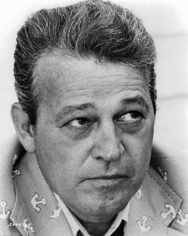
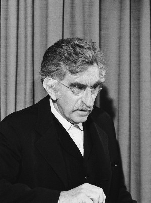
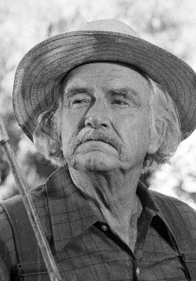
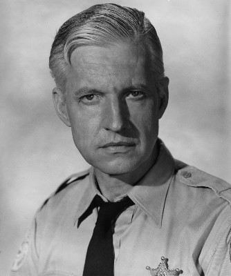
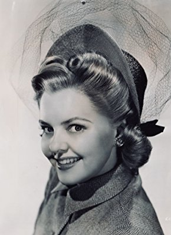
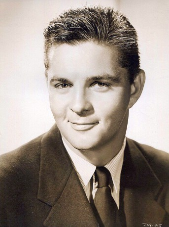

#8959 Der Mann, der zweimal lebte
Alternativ: Seconds
Auszeichnungen: für 1 Oscars nominiert

 IMDB-Wertung: 7.7 / 10
IMDB-Wertung: 7.7 / 10  Metascore: 0
Metascore: 0 
Der Bankangestellte Arthur Hamilton erhält mysteriöse Anrufe seines Freundes Charlie Evans von dessen Tod Arthur bis zu diesem Zeitpunkt fest ausgegangen war. Charlie bittet ihn, an einen bestimmten Ort zu kommen und sich dort unter dem Namen Wilson vorzustellen. Arthur geht auf die Bitte ein und gerät so an eine geheimnisvolle Organisation, die ihm ein unglaubliches Angebot unterbreitet. Arthur erhält die Chance, seinem tristen Leben zu entfliehen und neu anzufangen. Nach kurzem Zögern nimmt Arthur an und wird durch eine kosmetische Operation zu Tony Wilson, einem erfolgreichen Maler. Doch nach und nach kommen Arthur bzw. Tony Zweifel an seiner Entscheidung...
Jahr: 1966
Dauer: 107 Minuten
FSK: 18
Land: USA Studio: Paramount PicturesTonspuren: DD5.1 - ,
Untertitel: Englisch,
Auflösung: 1080p (1888x1080) Größe: 6860 MB
Genre: Thriller, Sci-Fi
Regisseur:  John Frankenheimer
John Frankenheimer
Drehbuch: Lewis John Carlino
Soundtrack: Jerry Goldsmith
Darsteller:
 John Randolph als Arthur Hamilton
John Randolph als Arthur Hamilton- Frances Reid als Emily Hamilton
- Barbara Werle als Secretary
-  Murray Hamilton als Charlie
-  Jeff Corey als Mr. Ruby
-  Will Geer als Old Man
 Richard Anderson als Dr. Innes
Richard Anderson als Dr. Innes Rock Hudson als Antiochus Wilson
Rock Hudson als Antiochus Wilson-  Wesley Addy als John
- Salome Jens als Nora Marcus
-  Elisabeth Fraser als Plump Blonde
- Robert Brubaker als Mayberry
- Dorothy Morris als Mrs. Filter
 Karl Swenson als Dr. Morris
Karl Swenson als Dr. Morris- William Wintersole als Dr. in Operating Room
- Carla Balenda als Operating Room Nurse (uncredited)
- Michael Masters als Orderly (uncredited)
-  John Mitchum als Truck Driver (uncredited)
- Jackie Russell als Mother (uncredited)
- Peg Shirley als Secretary (uncredited)
- Jane Wald als Party Guest (uncredited)
- Frank Campanella als Man in Station
- Edgar Stehli als Tailor Shop Presser
- Aaron Magidow als Meat Man
- De De Young als Nurse
- Françoise Ruggieri als Girl in Boudoir
- Thom Conroy als Dayroom Attendant
- Khigh Dhiegh als Davalo
- John Lawrence als Texan
- Nedrick Young als Henry Bushman
- Dodie Heath als Sue Bushman
- Kirk Duncan als Mr. Filter
- Will Allen als Party Guest (uncredited)
- Diane Bond als Airline Stewardess (uncredited)
- Burt Brandon als Ticket Agent (uncredited)
- Helen Brown als Maid (uncredited)
- Irving Burns als Man (uncredited)
- Robert Cleaves als Technician (uncredited)
- Connie Ducharme als Party Guest (uncredited)
- Ronald Dunas als Real Estate Man (uncredited)
- Fritz Ford als Party Guest (uncredited)
- John Francis als Therapist (uncredited)
- David Garfield als Commuter (uncredited)
- Don Gazzaniga als Man in Day Room (uncredited)
- Ronald Green als Ticket Agent (uncredited)
- Marge Hesse als Nurse (uncredited)
- Paul Kent als Party Guest (uncredited)
- Don Lloyd als Party Guest (uncredited)
- Mike Mahoney als Doctor (uncredited)
- Otto Malde als Man (uncredited)
Datei: X:\FSK18-1900-1999\Mann, der zweimal lebte, Der (1966, FSK18, 1888x1080).mkv seit 16.05.2018
Festplatte: FSK18
 Es gibt insgesamt 108 Filme in der Gruppe 'FSK18-1900-1999'
Es gibt insgesamt 108 Filme in der Gruppe 'FSK18-1900-1999'